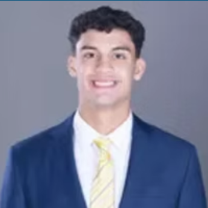

About Me

My name is Lorenzo Varona, I am currently a student at Hofstra University studying business and accounting. My goal is to build a strong foundation in financial analysis and corporate accounting. I am particularly interested in gaining real-world experience through internships and professional opportunities. Outside of academics, I enjoy athletics and being part of competitive team environments.
Skills
Microsoft Excel, financial analysis, teamwork, communication, time management
Projects or Interests
One of my main interests is learning more about accounting and financial reporting. Understanding how companies interpret financial information and use it to guide business decisions is something I enjoy studying.
Another major interest of mine is athletics, especially lacrosse. Being part of a team has helped me develop leadership skills, discipline, and the ability to manage responsibilities effectively.